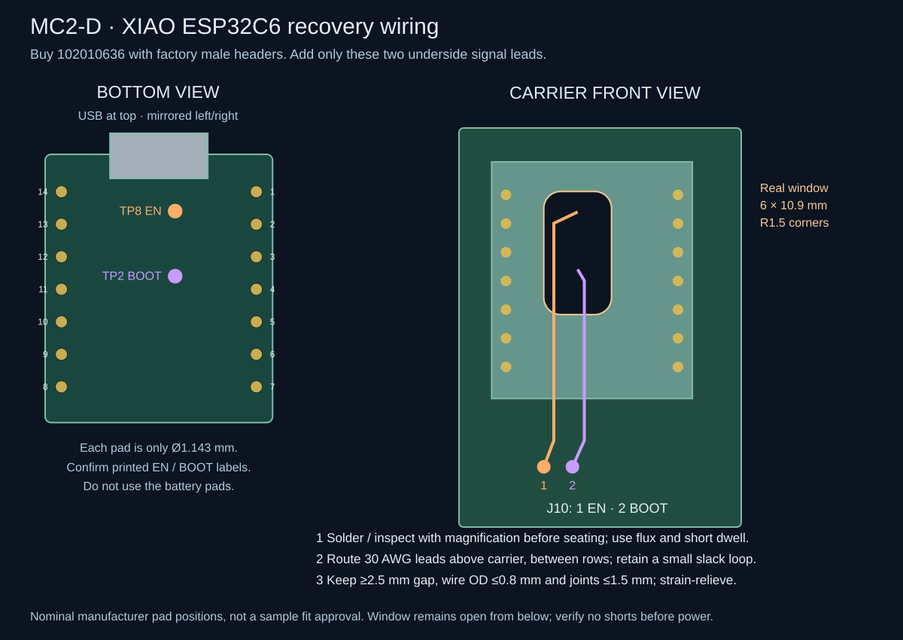

MC2-D classic ESP32 external-antenna carrier
MC2 is a 100 × 100 mm, two-layer, all-through-hole engineering prototype. All 19 fitted components face the room; two additional recovery footprints are unpopulated. There are no controller bodies above another component's solder tails and no carrier RF traces. Three independent factory RF connectors feed three external 2.4 GHz antennas through 50 Ω coax. This is a prototype fabrication candidate, not a production-qualified design or a claim of measured coverage.
Power assembly: J2 connects the offboard RECOM R-78K3.3-1.0 plus its 27 µF input capacitor. J2 remains a generic four-wire harness, not a regulator footprint. The native model now names RECOM; do not order the superseded Pololu. Power design and assembly guide.
Exact controller boards
- U1: Espressif ESP32-DevKitC-VIE, with ESP32-WROVER-IE, 8 MB flash and 8 MB quad PSRAM (4 MB mapped into the host heap, configured at 40 MHz). This is the original dual-core ESP32 generation with an external antenna connector, not an S3 and not the no-PSRAM WROOM/32UE. It has 38 pins, two rows of 19, 2.54 mm pitch and 25.40 mm row spacing. The official V4 dimension drawing gives a 27.94 × 48.26 mm carrier PCB with a projecting radio module. The official PCB layout overlays WROOM and longer WROVER outlines with the same 6.04 mm upper projection. Our body reservation includes that projection and rounding margin; the USB shell and RF center remain fit-check estimates. The official ordering table establishes the exact VIE memory/antenna variant. Do not substitute a generic 30-pin ESP32, WROVER-E with a PCB antenna, or an older 1.8 V WROVER module.
- U2: Seeed Studio XIAO ESP32C6, pre-soldered SKU 102010636, 4 MB flash. Buy this factory-header option, not bare SKU 113991254 or a three-pack. Two 1×7 rows at 2.54 mm pitch / 15.24 mm spacing replace the TinyC6 footprint. The board is nominally 21 × 17.8 mm, USB up. Native USB adds no competing UART bridge. Manufacturer schematic and board; xiaoc6-evidence.json pins source hashes and geometry. Factory headers do not expose EN or BOOT. Two 30 AWG insulated leads from bottom TP8/EN and TP2/BOOT to J10 preserve automatic RCP flashing. This is the only required soldering to small pads on the finished C6 board; each pad is Ø1.143 mm. The carrier access window remains open from below after assembly. Use the MC2-D firmware: GPIO3 LOW powers the RF switch and GPIO14 HIGH selects U.FL before Thread starts. No battery is fitted.
- U3: Seeed XIAO MG24, presoldered 102010690. The module's U.FL RF path must be selected by the matching firmware: PB04 and PB05 high. A connected antenna alone does not switch the RF path. Manufacturer board source.
All three use U.FL / MHF1 mating coax, not MHF3 or MHF4. SMA bulkheads and antennas are offboard mechanical parts; their exact connector/gain/cable choices are in the RF BOM. No antenna is shared between radios.
Electrical changes and connections
I²C address correction (20 October 2026): set the external DFR0627 DIP switches A1=1, A0=0, with UART1 register/FIFO 0x50/0x51 and the entire 0x50–0x57 block reserved. BME680 remains 0x77. The old 1/1 setting decoded 0x70–0x77, including BME680's address. This correction changes firmware and external switch setup, not carrier copper. See the connection audit.
pin-plan.json is the MC2-D firmware contract. All 21 application signals remain on the host: three native UARTs, shared hardware SPI, I²C, Ethernet IRQ/reset and C6 reset/boot. GPIO0 is reserved for recovery; GPIO1/3 remain on the factory USB-UART bridge; GPIO6–11 belong to flash and GPIO16/17 to PSRAM. GPIO34/35/36/39 are input-only and have no internal pull resistors. Runtime UART logging is disabled; the LD2450 UART0 is remapped to GPIO23 TX / GPIO18 RX after boot.
Host Thread TX/RX is GPIO26 / GPIO36, EN is GPIO27 and BOOT is GPIO15. XIAO carrier pad8 / D7 / GPIO17 receives host TX; pad7 / D6 / GPIO16 sends to host RX. Pad14 is diode-fed 5 V and pad13 is GND; pad12/local3V3 remains unconnected. J10.1 goes to bottom TP8/EN; J10.2 goes to TP2/BOOT/GPIO9. These are mandatory signal leads, not optional jumpers. GPIO8 already has the manufacturer's 5.1 kΩ pull-up and BOOT has 10 kΩ, so R3 is removed and no local C6 3.3 V rail is brought onto the carrier. Do not join the controller 3.3 V outputs to the peripheral rail.

Fit the two flexible 30 AWG leads before seating U2, with wire insulation diameter ≤0.8 mm and joint height ≤1.5 mm. Route them above the carrier between U2's two rows and out past the lower module edge to J10; the window is for solder/tool/inspection access, not a below-carrier cable route. Verify a module-to-carrier gap of at least 2.5 mm, apply strain relief to insulated wire with a small slack loop, and keep force off the gold pads. Do not attach the leads to the tiny top-side switches or battery pads. The 6 × 10.9 mm routed window has 1.5 mm corner radii. Check for shorts and pull-up continuity before power. A hot-air station is not needed; a fine iron tip, flux, magnification and small-pad soldering skill are required.
R4 and R5 are required boot pull-downs, not optional parts. R4 holds GPIO12 / SPI SCK LOW; the WROVER-IE datasheet, Table 2 and §4.2, specifies 3.3 V VDD_SDIO, selected by LOW on GPIO12/MTDI. R5 holds GPIO2 / SPI MOSI LOW so UART downloading works with GPIO0 LOW. Each resistor is 10 kΩ to GND. These two host outputs connect only to SPI slave inputs: never add a pull-up, LED, UART transmitter or other driving source to these nets. No eFuse modification is needed or assumed. The WIZ850io v1.1 schematic has no SCK/MOSI pull-ups; its CS, IRQ and RESET already have 4.7 kΩ pull-ups. Verify the actual CC1101 module also has no conflicting SCK/MOSI pulls before assembly.
GPIO5 carries W5500 CS and is pulled HIGH by WIZ850io. GPIO15 carries C6 BOOT; LOW at host reset only suppresses the host ROM serial log, not normal flash boot. It is normally HIGH through the XIAO C6 board's boot pull-up and host default pull-up. Do not add cross-rail pull-ups. SPI uses the GPIO matrix at the configured device speeds; the W5500 runs at 10 MHz. The MG24 four-wire UART is GPIO32 TX / GPIO39 RX / GPIO33 RTS / GPIO14 CTS. CC1101 uses GPIO13 CS / GPIO25 GDO0 open-drain TX / GPIO35 GDO2 RX; I²C is GPIO21 SDA / GPIO22 SCL.
The original ESP32 radio supports Bluetooth LE 4.2 legacy advertisements and connections. The three active BLE proxy slots remain configured, but BLE5 extended advertisements, 2M PHY and Coded PHY are not supported. Zigbee and Thread still use their independent MG24 and C6 radios. A successful build does not establish runtime heap margin or simultaneous-load reliability.
The remaining external harnesses preserve MC1's function: J10 mandatory C6 recovery leads; J1 isolated/fused 5 V input; J2 offboard 3.3 V buck (current RECOM assembly override above); J3 DFR0627 UART expander; J4 ZAC93; J5 CC1101; J6 LD2450; J7 BME680. Connectors and exact pad coordinates and net membership are generated from the same design.py as the native schematic and PCB. J8 is XIAO PC00-to-GND recovery; J9 is host GPIO0-to-GND recovery. Leave both unpopulated/open in operation.
The existing network PoE switch feeds an active, isolated, regulated 5 V splitter upstream of J1. Neither battery voltage nor raw PoE enters this board. J2 connects an external 3.3 V buck only to WIZ850io and peripheral harnesses. Controller 3.3 V outputs are not joined to that rail. D1 is a 22 AWG insulated wire link, not a diode. It preserves the original pad centers and directly feeds the host EXT_5V input without the avoidable Schottky drop ahead of its AMS1117. D2/D3 remain 1N5819: cathode/banded pad1 toward U2/U3, anode pad2 toward fused 5 V. Use two of the three purchased diodes and keep the third as a spare. Measure rail voltage at maximum simultaneous load: splitter, wire and contact losses still matter. Never attach powered USB to the assembled hub, even with PoE off: host USB can energize the complete 5 V bus through D1, and signal pins can backpower other rails. Flash loose boards first; assembled operation uses PoE and OTA only. Power down before connecting harnesses.
Mechanical contract
design.json is the geometry authority. Four 2.7 mm NPTH holes are at (4,4), (96,4), (4,96), (96,96) mm, front-view origin at the top left. Use insulating M2.5 supports no wider than 5 mm at the PCB. The WIZ850io front-facing footprint is rotated180°: its RJ45 mouth is at y102 mm, x62.45–78.55 mm, 2 mm beyond the carrier. Support its jack with the enclosure cradle so cable insertion force does not rely on header joints.
The ledger retains physical USB shells, short USB service approaches and harness-mating envelopes. The XIAO C6 RF center is a nominal manufacturer KiCad coordinate, while the host and XIAO socket points remain planning estimates; use sufficient pigtail slack and verify engagement, bend radius and strain relief with delivered boards. Never press a mismatched miniature coax connector into place. Carrier fit, connector height, printer tolerances and simultaneous-radio performance remain unmeasured. MC2 enclosure.
Checks and reproduction
Native ERC, DRC, unrouted items and schematic parity must all be zero; there are no intentional warning/overlap exemptions. The carrier has 31 connected nets. Its 38-pin host footprint is not compatible with the 44-pin MC2-A S3 footprint. MC2-D changes U2 to the 14-pin factory-header XIAO, removes R3, adds J10 and a real underside access window, and reroutes the copper Order the matching MC2-D board and firmware together; a zero-DRC result does not test the antenna switch or physical assembly. test_design.py also checks controller pin numbers, reserved GPIOs, supply separation and all module body/pad projections. Passive module symbols model connections, not the boards' internal power circuits.
Run with KiCad10's Python and libraries. Keep environment variables local to the task:
"$KICAD_PY" generate.py --libraries "$KICAD_LIBRARIES"
"$KICAD_CLI" sch export netlist --format kicadxml -o .build/mc2.xml mc2.kicad_sch
cp routing/mc2.ses .build/mc2.ses
"$KICAD_PY" finalize.py
"$KICAD_CLI" sch erc --severity-all --exit-code-violations --format json --output checks/erc.json mc2.kicad_sch
"$KICAD_CLI" pcb drc --severity-all --exit-code-violations --format json --schematic-parity --output checks/drc.json mc2.kicad_pcb
"$KICAD_PY" record_verification.py
python3 test_design.py
python3 render_assembly.py
python3 render_recovery.py
python3 reproduce_check.py --python "$KICAD_PY" --cli "$KICAD_CLI" --libraries "$KICAD_LIBRARIES"
The checked-in Specctra session was routed with Freerouting2.5.0, one optimization thread. It includes every connection, including J10 EN/BOOT and the host SPI boot pull-downs. Import it with finalize.py, which also refills ground. Track/via dimensions and clearance are unchanged from MC1: 0.25 mm signal, 0.80 mm power, 0.80/0.40 mm vias, 0.20 mm clearance and 0.50 mm copper-to-edge minimum. Fabrication settings are 1.6 mm FR-4, two 35 µm copper layers, green solder mask and lead-free HASL. This is a prototype fabrication package; it is not production qualified. The native KiCad board can be used for a small prototype after the BOM, power and assembly review; physical qualification then gates a larger run.